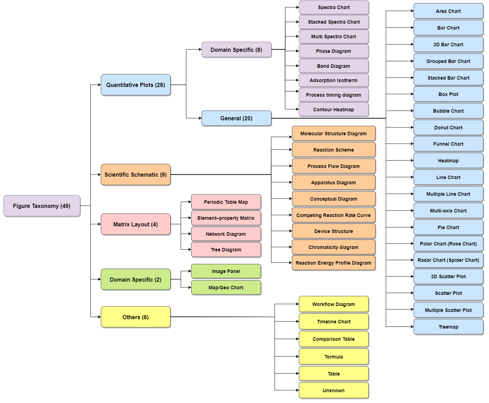
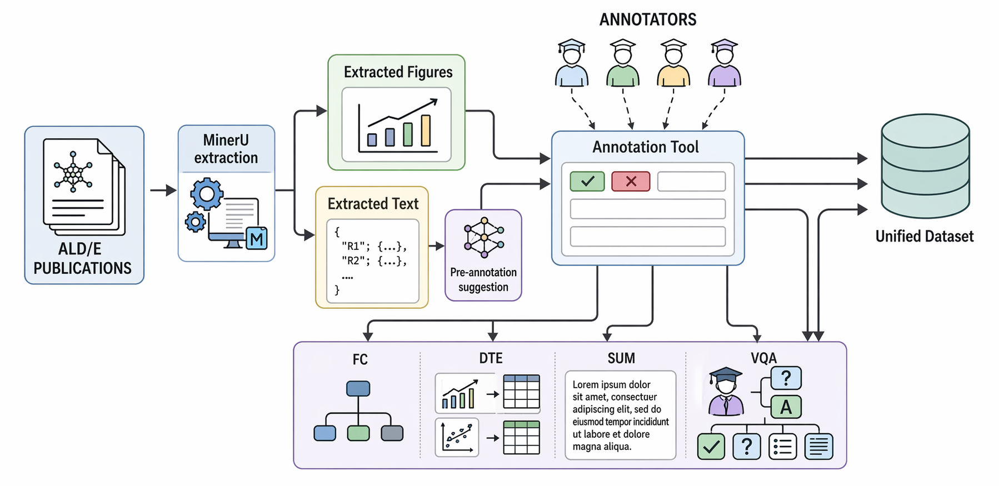
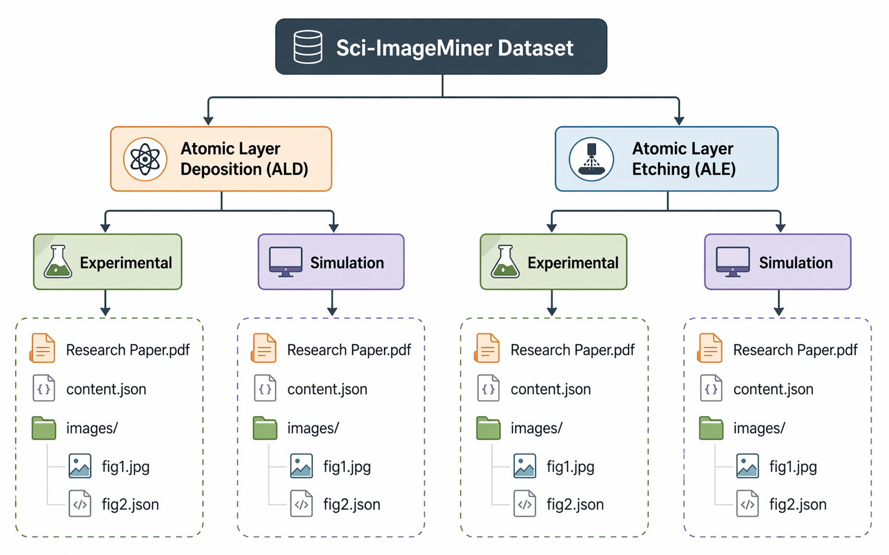
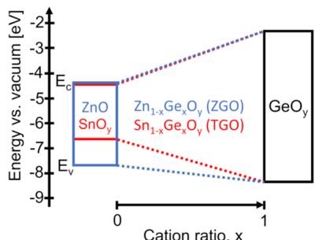
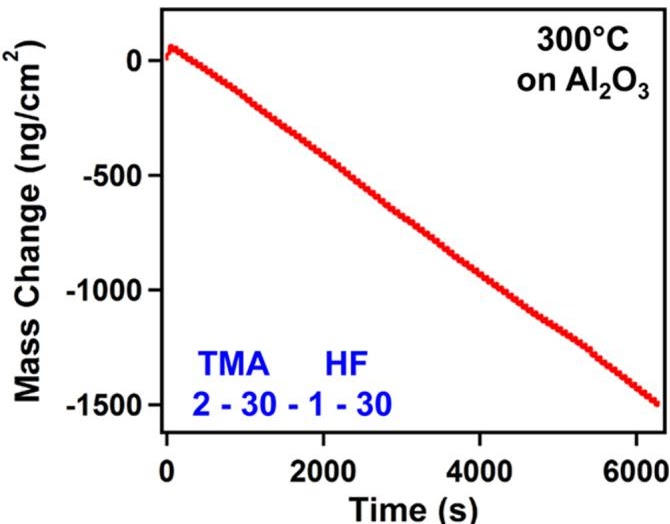
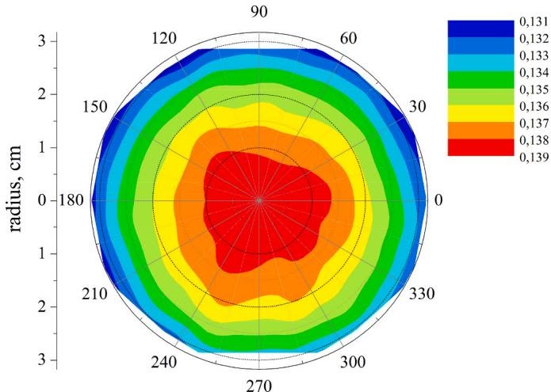
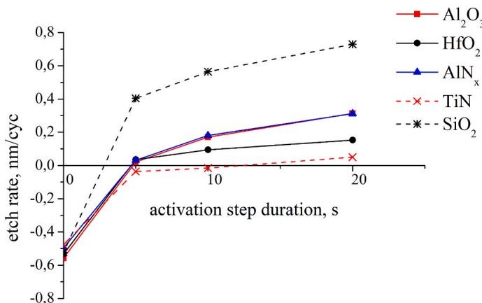

ICDAR 2026 Competition on Information Extraction from Atomic Layer
Deposition/Etching (ALD/E) Scientific Figures
Fahad Ahmed, Sören Auer, and Jennifer D'Souza
TIB - Leibniz Information Centre for Science and Technology · L3S Research Center

Scientific figure comprehension and reasoning using multimodal AI requires
integrating visual perception with domain-specific reasoning to extract
meaningful knowledge, often not presented in the text of a research
publication. The Sci-ImageMiner benchmark dataset, accompanied by a
community-driven competition, raises the bar over prior scientific
competitions by curating a comprehensive, expert-annotated dataset across
four end-to-end complementary tasks. The competition attracted 68 active
participants and 1,263 public/private submissions from 9 January 2026 to
8 April 2026. Our results show that state-of-the-art multimodal models
perform well on classification and summarization tasks but struggle with
data extraction and scientific reasoning, particularly in visual
question-answering. These findings reveal key limitations and highlight
challenges and opportunities for improving domain-aware multimodal AI
systems. Overall, the Sci-ImageMiner benchmark and competition establish
a rigorous platform for advancing research in scientific figure
comprehension and reasoning and demonstrate the potential of
state-of-the-art approaches for a challenging and complex research area.
205source papers
1,951full-figure records
49taxonomy classes
1,263competition submissions
Benchmark
The released benchmark covers ALD and ALE papers across experimental
and simulation use cases. It provides train, dev, and gold-standard
test splits with figure images, captions, bounding boxes, and
task-specific annotations. Task definitions are summarized from the
official competition task description.
We collected 205 research publications in ALD/E materials science,
encompassing both experimental and simulation-based studies.
MinerU is
used to extract textual content in structured JSON format along
with high-resolution figures in JPEG format, preserving semantic
structure and visual fidelity for downstream multimodal analysis
as illustrated in Figure 1.

Fig. 1: Overview of the ALD/E-ImageMiner benchmark end-to-end curation workflow.
The dataset is organized into two primary categories: ALD and ALE,
which are further divided into experimental and simulation-based
studies. It is partitioned into standard train/dev/test splits with
the statistics shown in Table 1 and the organization illustrated in
Figure 2.

Fig. 2: Illustration describing the ALD/E-ImageMiner dataset organization hierarchy.
Research papers are numerically indexed, containing the PDF,
content.json (sections and figure captions), along with
figures and annotation JSON files inside the images directory.
Benchmark Task Descriptions
The four panels below summarize the official competition task
definitions with compact examples from the task website while
preserving the input/output structure.
Task 1: Classification
A supervised multi-class image classification
task. Systems must identify one of the 49 figure classes from a
scientific figure.

Example: Band Diagram
Predicted class: Band Diagram
Inputs
A scientific figure extracted from an ALD/E research paper.
Context
Optional metadata, such as figure caption text, may be provided.
Output
Predicted class label corresponding to one of the 49 figure types.
Structured reconstruction of tabular data encoded in scientific
charts. Systems identify field labels, table structure, and textual
or numerical cell values.

Example: chart values reconstructed as Markdown table cells
Example output:| Time (s) | Mass Change (ng/cm²) || 0 | 0 | 2000 | -500 | 4000 | -1000 | 6000 | -1500 |
Input
Scientific chart or plot image, such as a bar chart, line chart, scatter plot, spectra chart, or phase diagram.
Output
Machine-readable Markdown table representation of the quantitative chart.
Fields
Field/column names of visualized entities and extracted textual or numerical cell values.
Generate concise, factual summaries that capture key trends,
relationships, and scientific insights presented in the figure.
Systems must ground their interpretation in the visual content.

Example: polar heatmap summarized in 1-3 sentences
Example summary:
Polar heatmap of Al2O3 etch rate distribution
across a wafer, with rates peaking centrally and decreasing
radially toward the edge.
Input
Scientific chart or plot image.
Context
Optional metadata, such as figure caption text, may be provided.
Output
Short textual summary of 1-3 sentences describing main trends and takeaways.
Fine-grained reasoning over figures through natural-language
questions that reference axes, legends, data patterns, and
scientific meaning.

Example: question answering over plotted etch-rate trends
Question type: Comparative/Trend Question: For the etching of aluminum based
material, does it matter which type of material it is? Answer type: Paragraph Answer: No, it does not seem to matter. Both
Al2O3 and AlNx have similar etch
results.
Subtasks
Process-oriented, comparative/trend, structure-property, and application/performance reasoning.
Inputs
Scientific chart or plot image, natural-language question, and optional relevant paragraph or figure-caption context.
The strongest systems were not single-model baselines. They combined
vision-language models with task structure: hierarchy-aware
classification, chart-to-table training data, context retrieval,
alignment training, and answer-type-aware VQA pipelines.
Loading Codabench leaderboard snapshot...
Contribute to the Live Leaderboard on Codabench
The competition continues beyond the official competition period. The
benchmark is now in its post-competition phase, and the leaderboard
will remain open indefinitely for new submissions. Evaluate your
multimodal system on the public leaderboard using the resources below.
Use the GitHub repository to access the competition dataset, Codabench
submission-format guidelines, and the evaluation scripts used on the
Codabench competition pages.
Use the Hugging Face dataset to visually explore the data. It supports
image class style loading by train/dev/test split.